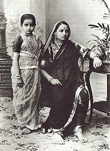

A sari (sometimes also shari or misspelled as saree)[note 1] is a women's garment from the Indian subcontinent[1] that consists of an unstitched drape varying from 4.5 to 9 metres (15 to 30 feet) in length[2] and 600 to 1,200 millimetres (24 to 47 inches) in breadth[3] that is typically wrapped around the waist, with one end draped over the shoulder, partly baring the midriff.[4][5][6] It is traditionally worn in the countries of India, Pakistan, Bangladesh, Sri Lanka and Nepal. There are various styles of sari manufacture and draping, the most common being the Nivi style [7][8] The sari is worn with a fitted bodice commonly called a choli (ravike or kuppasa in southern India, and cholo in Nepal) and a petticoat called ghagra, parkar, or ul-pavadai.[9] In the modern Indian subcontinent, the sari is considered a cultural icon.[10]
